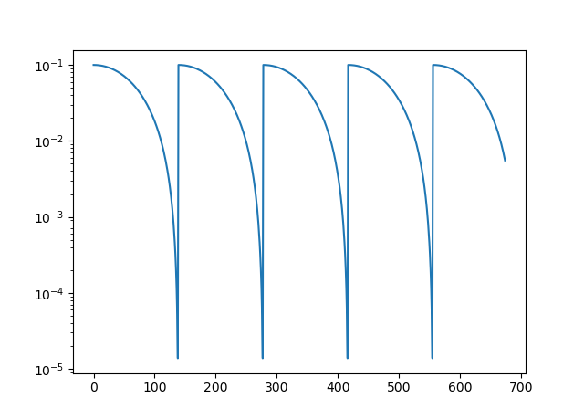
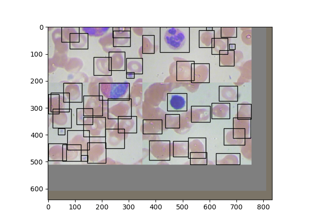
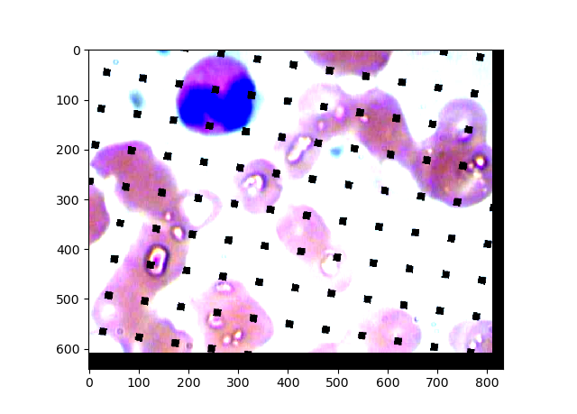
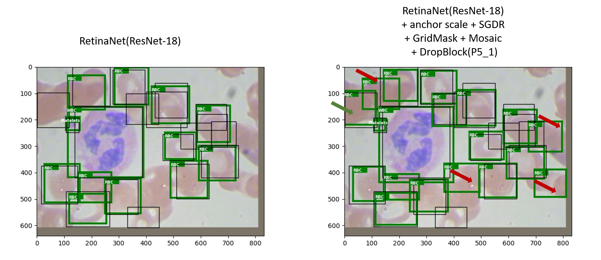

個人練習，以RetinaNet[1]數血液細胞的個數。
主題：
計算一張血塗片影像中出現的血小板(Platelet)、紅血球(RBC)和白血球(WBC)的個數。
並運用一些訓練技巧:
- 增加一個 anchor scale，全部scale為[0.79, 1.0, 1.26, 1.59]
- Stochastic Gradient Descent with Warm Restarts 來調整學習率，參數T_0=139(因為資料筆數278), T_mult=1, eta_min=1e-6
- 資料增量： Mosaic[2]，參數probability of utilizing Mosaic = 50%
- 正規化：GridMask[3], DropBlock[4]
GridMask，參數 rotation=45, mask ratio = 80%, probability of utilizing GridMask = 50%，程序在做了Mosaic資料增量之後 DropBlock，實驗顯示套用在PyramidFeatures的P5_1層效果比P3_1層來得好，參數block_size=2, start prob=0, stop probe=0.1, nr_steps=4e3, start_step=0
資料集：
與 baseline (HOG+SVM) link 相同
方法：
- backbone選用ResNet-18，確認其物件偵測表現遜於backbone為ResNet-50(以確認模型表現還有成長的空間)，然後測試上述訓練技巧，能否提昇backbone為ResNet-18的表現。
- 每個方法重複實驗3次，validation數據取平均，取validation mAP最高的模型測試testing資料集。
- 圖檔大小與COCO dataset相近，所以維持使用原RetinaNet架構，統一訓練30 epoch。
結果:
使用 VOC-style Average Precision算法[6]。
- 最好的模型的表現：：
| Average Precision (avg val/test)(IoU threshold=0.5) | |||||
| Method | Platelet | RBC | WBC | mAP (avg val/test) | (1) | RetinaNet(ResNet-50) | 85.54%±6.40% / 90.59% | 81.18%±3.21% / 86.29% | 100% / 100% | 88.91%±1.25% / 92.29% |
| (2) | RetinaNet(ResNet-18) | 79.09%±3.28% / 87.00% | 77.67%±2.69% / 86.22% | 100% / 100% | 85.59%±0.73% / 91.07% |
| (3) | RetinaNet(ResNet-18) + anchor scale + SGDR |
80.18%±2.23% / 98.10% | 82.78%±1.76% / 86.63% | 100% / 100% | 87.65%±0.22% / 94.91% |
| (4) | RetinaNet(ResNet-18) + anchor scale + SGDR + GridMask |
83.10%±2.06% / 94.33% | 80.18%±0.8% / 85.64% | 100% / 100% | 87.76%±0.58% / 93.32% |
| (5) | RetinaNet(ResNet-18) + anchor scale + SGDR + GridMask + Mosaic |
85.46%±0.35% / 95.80% | 81.22%±1.34% / 87.57% | 100% / 100% | 88.89%±0.34% / 94.46% |
| (6) | RetinaNet(ResNet-18) + anchor scale + SGDR + DropBlock(P3_1) |
80.78%±0.49% / NA | 81.80%±0.80% / NA | 100% / NA | 87.53%±0.20% / NA |
| (7) | RetinaNet(ResNet-18) + anchor scale + SGDR + DropBlock(P5_1) |
83.95%±1.94% / 97.30% | 82.17%±1.81% / 85.77% | 100% / 100% | 88.71%±0.19% / 94.36% |
| (8) | RetinaNet(ResNet-18) + anchor scale + SGDR + GridMask + Mosaic + DropBlock(P5_1) |
87.05%±6.33% / 98.97% | 81.88%±4.48% / 90.59% | 100% / 100% | 89.64%±1.22% / 96.52% |
precision-recall curve on testing dataset:
- RetinaNet(ResNet-18) + anchor scale + SGDR + GridMask + Mosaic + DropBlock(P5_1)
得到的數據接近這個部落格(link)的結果。
分析bounding box
- 最佳模型判斷出不少false positive(如上圖，綠色框為預測，黑色框為ground truth，紅色箭頭指出false positive)，其實也顯得ground truth標得不那麼好，這應該是訓練上的瓶頸。
- 在畫面邊緣的紅血球會有沒被偵測的時候，但觀察不出發生的規則，待解惑。
溫故知新
image normalozation的mean和std設定值是否很重要？
需要做image normalozation的原因跟做batch normalization的原因相似，batch normalization：將輸入資料調整為高斯分佈、降低Internal Covariate Shift問題[5]，增進模型的學習效率。image normalozation的常見算法是對training dataset的每個channel獨立計算mean和variance，用BN取代image normalozation不是個有效率的作法，因為BN的mean和variance是模型逐次學習出來的。
我使用的RetinaNet其image normalozation的mean和std設定值是由COCO資料集算出來的，比較用Blood Cells資料集算出來的mean和std[6]，雖然肉眼看到的色調明暗差異大，但兩者模型準確度是差異不大。
為何凍結BN層參數？
作者說雖然因為pretrained資料集是Imagenet，與我們的dataset統計分佈有差異，可是訓練物件偵測模型的batch size很小(例如8)，又，有人實驗過，若藉由finetuning來學習新的BN，模型表現反而會像從頭訓練那般，難怪作者會選擇凍結Resnet的BN層參數。[7]
使用Focal loss時，model新增的層的初始值要選用zero-weight、constant-bias。
我實驗如果改用Kaming initialization，訓練初期的的loss會非常大(如下)，我覺得若訓練在別的資料集有可能導致訓練不收斂。
Epoch: 0 | Iteration: 0 | Classification loss: 3037.13330 | Regression loss: 9.85530 | Running loss: 3046.98853
Epoch: 0 | Iteration: 30 | Classification loss: 84.43515 | Regression loss: 1.49457 | Running loss: 764.80437
Epoch: 0 | Iteration: 60 | Classification loss: 1.43819 | Regression loss: 0.88586 | Running loss: 397.02907
Epoch: 0 | Iteration: 90 | Classification loss: 0.68479 | Regression loss: 0.87473 | Running loss: 266.69952
Epoch: 0 | Iteration: 120 | Classification loss: 0.47948 | Regression loss: 0.77096 | Running loss: 200.89332
增加小尺寸的anchor在此效果不大，因為RetinaNet最小的anchor是32x32px，偵測物件的條件是IOU > 0.5，sqrt(0.53232) = 22.6 pixels，等效上大小22.6x22.6px 的物件即可被偵測到，而小型血小板的尺寸也約莫20x20px、數量很少；但在使用Mosaic資料增量時，因為4張圖組成一張新圖，物件被縮小為1/4倍，便需要更小尺寸的anchor。
雖然FPN使用C2應該能幫助偵測小物件，但付出的代價是更多anchor、更難訓練好模型[8]
SGDR
Adam演算法的缺點是容易收斂在局部最佳點，訓練物件偵測模型的話建議使用SGD演算法[9]，而SGDR據說可以更能找到全局最佳點，我實驗學習率的變化週期是0.5 epoch、1 epoch的表現差不多，2 epoch則略遜，感覺它還是靠運氣，找到的血小板AP、紅血球AP最佳點差異不小，也影響從數據比較GridMask、Mosaic、DropBlock的效果。RetinaNet(ResNet-18) + anchor scale + SGDR的3次訓練表現如下表Platelet RBC WBC validation mAP (1) 77.64% 84.63% 100% 87.43% (2) 81.84% 81.14% 100% 87.66% (3) 81.05% 82.56% 100% 87.87% 觀察訓練過程中的precision數值，感覺血小板和紅血球的precision有互相消長的傾向，我初期以為是因為血小板的形狀簡單、算是eazy sample，所以實驗加重Focal loss的參數alpha和gamma[10]，但實驗得到血小板的precision數值在訓練的早期有提昇，最終數值卻沒有突破，紅血球表現持平。
從validation dataset影像檢視血小板的錯誤情形，推測血小板和紅血球的AP互相消長的原因可能是紅血球的陰影、出現在紅血球附近類似氣泡的東西干擾模型的判斷。Mosaic、GridMask和DropBlock技巧有助於提昇血小板的AP，只是得延長訓練時間，原先基本模型大約20 epoch可收斂，加上上述技巧，模型最佳表現出現在20 epoch~30 epoch之間。
一開始我疏忽了，使用程式中預設的IoU threshold為0.05，怎麼實驗每個技巧得到的數據都差不多，改為0.5之後便得到顯著差別了。
現在我還不知道如何視覺化看到DropBlock在activation上的樣子；要在哪裡加上DropBlock需要盲目嘗試。
True positive的計算方式，基本上以IoU為準，與ground truth重疊達一定閥值才算，當有多個預測框同樣框在一個ground truth身上時，預測框會以信心分數高者優先為true positive，其他預測框列為false positive。當有一個預測框同時框了多個ground truth，只能歸屬於當中先被讀取的一個ground truth，其他ground truth算是沒被偵測到。[11]
參考資料：
[1] RetinaNet source project link
[2] Mosaic link
[3] GridMask source project link
[4] DropBlock source project link
[5] Internal Covariate Shift link
[6] NVidia的影像正規化介紹 link
[7] 凍結BN層參數 link
[8] 不建議FPN使用C2 link
[9] 訓練物件偵測模型的話建議使用SGD演算法 link
[10] Focal loss的alpha、gamma意義link
[11] 物件偵測 True positive的計算方式link